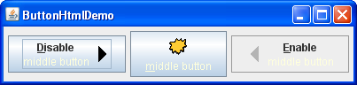

Lección: Usando Componentes Swing
Cómo Usar HTML en Componentes Swing
Muchos componentes de Swing muestran una cadena de texto como parte de su IGU. Por defecto, el texto de un
componente es visualizado en una única fuente y color, todo en una línea. Puede determinar la fuente y el color
del texto del componente invocando los métodos del componente setFont y setForeground
, respectivamente. Por ejemplo, el código siguiente crea una etiqueta y entonces establece su fuente y color:
label = new JLabel("Una etiqueta");
label.setFont(new Font("Serif", Font.PLAIN, 14));
label.setForeground(new Color(0xffffdd));
Si quiere mezclar fuentes o colores dentro del texto, o si quiere formatearlo tal como en líneas múltiples, puede usar HTML. El formateado HTML puede ser usado en todos los botones, elementos de menú, etiquetas, tool tips, y paneles tabulados de Swing, así como también en componentes tales como árboles y tablas que usen etiquetas para generar el texto.
Para especificar que el texto de un componente tiene formateado HTML, simplemente coloque la etiqueta
<html> al principio del texto, entonces use cualquier HTML válido en el resto. Aquí tiene un
ejemplo de uso de HTML en el texto de un botón:
button = new JButton("<html><b><u>D</u>os</b><br>líneas</html>");
Aquí está el botón resultante.
Un Ejemplo: HtmlDemo
Una aplicación llamada HtmlDemo le permite jugar con el formateo de HTML estableciendo el texto de
una etiqueta. Puede encontrar el código entero para este programa en
HtmlDemo.java. Aquí tiene una foto del ejemplo HtmlDemo.
Pruebe Esto:
-
Pulse el botón Lanzar para ejecutar HtmlDemo usando
Java™ Web Start
(descargue KDJ 7 o
posterior). Alternativamente, para compilar y ejecutar el ejemplo usted mismo, consulte el
índice de ejemplos.

- Edite el formato de HTML en el área de texto a la izquierda y pulse el botón "Cambia la etiqueta". La etiqueta a la derecha muestra el resultado.
- Elimine la etiqueta <html> del área de texto a la izquierda. El texto de la etiqueta ya no se analiza como HTML.
Ejemplo 2: ButtonHtmlDemo
Veamos otro ejemplo que usa HTML. ButtonHtmlDemo agrega fuente, color, y otros formateados de
texto a los tres botones. Puede encontrar el código entero de este programa en
ButtonHtmlDemo.java. Aquí tiene una foto del ejemplo ButtonHtmlDemo.

Pulse el botón Lanzar para ejecutar ButtonHtmlDemo usando Java™ Web Start (descargue KDJ 7 o posterior). Alternativamente, para compilar y ejecutar el ejemplo usted mismo, consulte el índice de ejemplos.
Los botones izquierdo y derecho tienen líneas múltiples y estilos de texto y son implementados usando HTML. El botón del medio, por otro lado, usa sólo una línea, fuente, y color, de forma que no requiere HTML. Aquí tiene el código que especifica el formato de texto para estos tres botones:
b1 = new JButton("<html><center><b><u>D</u>isable</b><br>"
+ "<font color=#ffffdd>middle button</font>",
leftButtonIcon);
Font font = b1.getFont().deriveFont(Font.PLAIN);
b1.setFont(font);
...
b2 = new JButton("middle button", middleButtonIcon);
b2.setFont(font);
b2.setForeground(new Color(0xffffdd));
...
b3 = new JButton("<html><center><b><u>E</u>nable</b><br>"
+ "<font color=#ffffdd>middle button</font>",
rightButtonIcon);
b3.setFont(font);
Note que tenemos que usar una etiqueta <u> para causar que los caracteres mnemotécnicos
"D" y "E" sean subrayados en los botones que usan HTML. Note también que cuando un botón es
deshabilitado, su texto HTML desafortunadamente permanece negro, en vez de volverse gris. (Consulte
bug #4783068 para ver si ésta
situación cambia).
Esta sección describe cómo usar HTML en componentes ordinarios, que no son de texto. Para más información sobre los componentes cuyo objetivo primario es formatear texto, vea Usando Componentes de Texto.
Si está programando con JavaFX, vea Editor HTML.